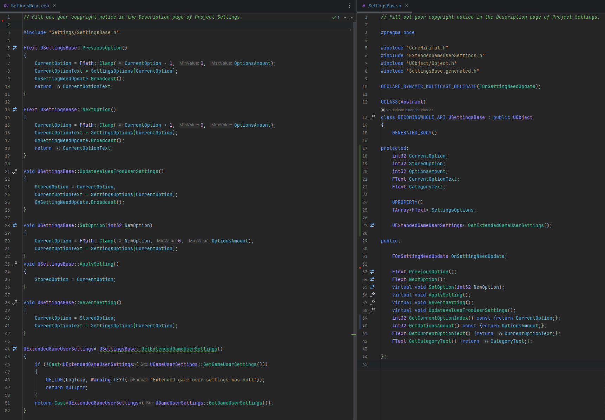
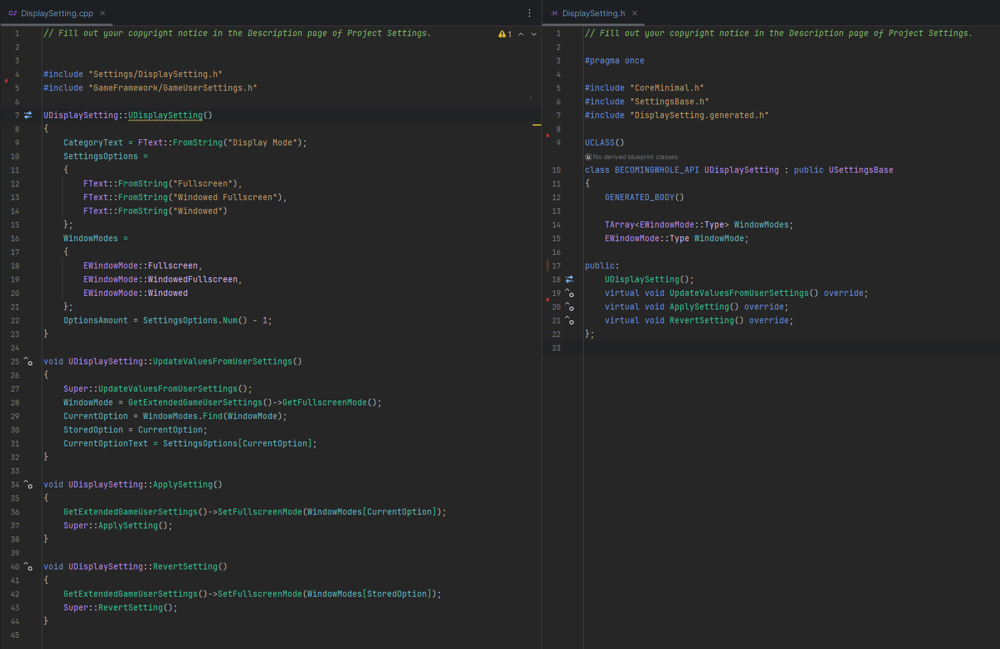
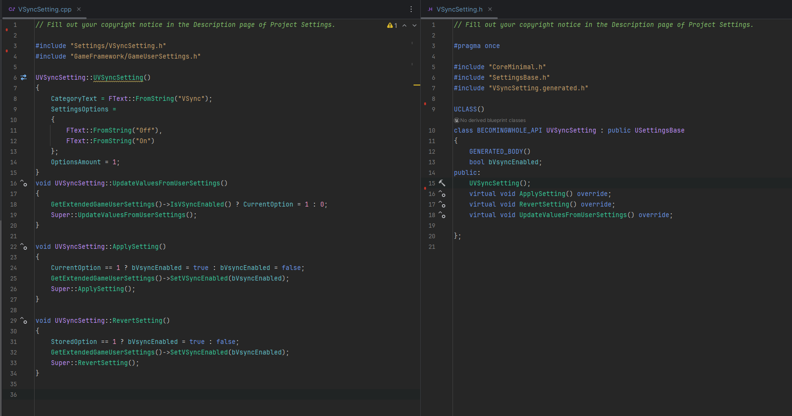
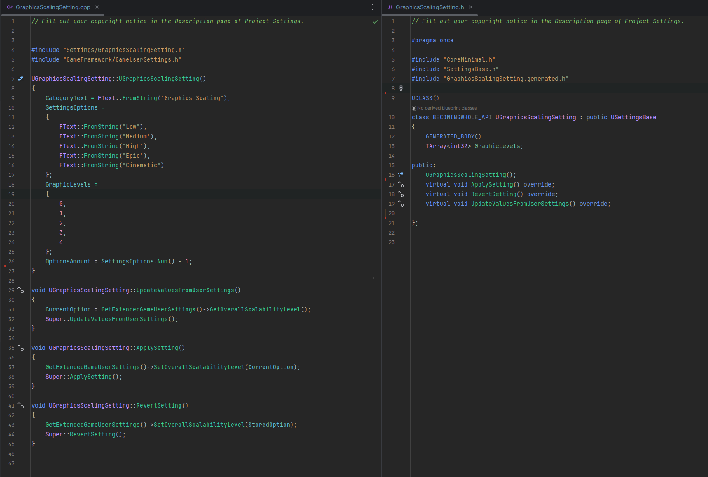
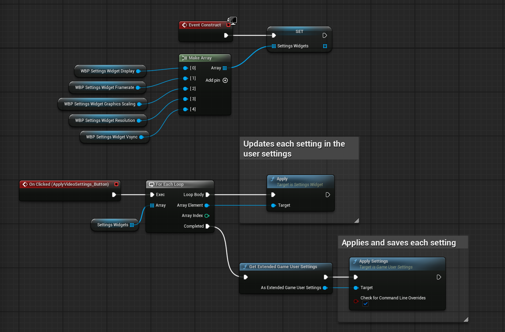
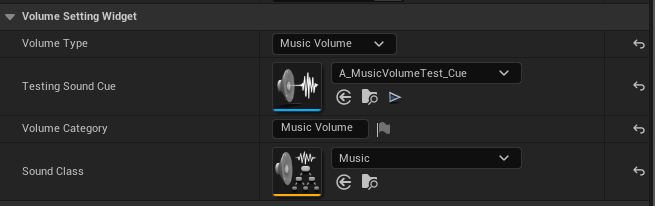
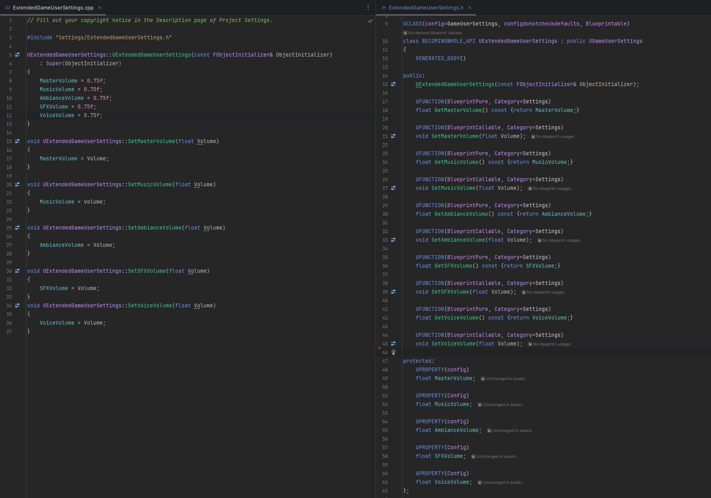

(Click any of the list items to view their related content)
(Click any image to enlarge)
Overview
The aim with this project was to create an intro/demo level for a horror game
where they player can become familiar with the controls and narrative.
It was my graduation project when studying the Game Design programme at
Futuregames Stockholm and lasted for 10 weeks. The premise, pacing and use
of everyday tasks as progression is based on short horror games like the
Chilla's Art and Fears to Fathom series.
Narrative
Protagonist leads an unfulfilling life as a public cleaner. Barely making any money,
having no aspirations within the field and being treated terribly by co-workers has
made the protagonist hate life.
That is until they receive a mysterious phone call from a probate attorney telling
them they are the sole heir of a large lodge up north.
Driven by both monetary gain and curiosity, the protagonist journeys to the old
estate to see what it is all about and assess what can be salvaged or sold from it.
Playthrough
Overview
The aim with this project was to create an intro/demo level for a horror game
where they player can become familiar with the controls and narrative.
It was my graduation project when studying the Game Design programme at
Futuregames Stockholm and lasted for 10 weeks. The premise, pacing and use
of everyday tasks as progression is based on short horror games like the
Chilla's Art and Fears to Fathom series.
Narrative
Protagonist leads an unfulfilling life as a public cleaner. Barely making any money,
having no aspirations within the field and being treated terribly by co-workers has
made the protagonist hate life.
That is until they receive a mysterious phone call from a probate attorney telling
them they are the sole heir of a large lodge up north.
Driven by both monetary gain and curiosity, the protagonist journeys to the old
estate to see what it is all about and assess what can be salvaged or sold from it.
Playthrough
Trash Cart
As the protagonist is a cleaner, the trash cart is a major part of the gameplay.
It moves along a spline through the different areas with the ability to go either
direction. The cart has its own input mapping context and with its own controls.
As the player's goal is mainly to pick up trash, the trashcart serves as an
anchor point that the player sticks close to and drops trash into.
The distance you can travel along the spline is tied to the current objective the player is on.
For example the trashcart can only travel between the public restrooms and the cleaning supply
room before objective 9, which is triggered when the player opens the back door that leads to
the loading dock and ramp leading to the platform. When this objective is triggered the trashcart
can travel down the ramp but not past the platform door, which needs to be open to progress past.
The trashcart moves forward via player input like so:
The trash carts state is also saved between sessions, this way it will be where the player left it and
interact with objects correctly.
Notes
Throughout the game the player finds notes and
images.
These can contain important information that needs to
be accessible at later stages in the game. For this reason I added a
journal that tracks the readable objects
the player has interacted with.
The most important thing the player interacts with in the demo is the
protagonists schedule.
It will tell the player what to do and in
what order, and since the listed tasks are relevant
through the entire demo, they need to be easily accessible
to prevent backtracking or other annoyances.
Inventory
The character window is made up of:
Inventory
Item description panel
Held Item
Player Health (not implemented)
The inventory space starts with 3 and is meant to increase incrementally by 3
throughout the game to a max of 12. Item management in the demo was always meant
to be minimal, but it was still important for it be taught. After the demo the game
was meant to become more of a direct horror game with some resource management.
It was at this stage the inventory was to become a more critical part of the gameplay.
Video Settings
The video settings used are my third iteration of basic video settings. The ones i usually make are:
Display Mode
Resolution
Graphics Scaling
Framerate Cap
VSync
My other implementations have been manager style classes, but they quickly become hard to manage as
more settings are added. This time around I wanted a setup that made adding new settings clean and easy.
For this reason I opted for 2 base classes that work together. The classes are:
SettingsWidget (UUserWidget)
SettingsBase (UObject)
The SettingsBase mainly has variables and functionality to move through arrays,
these are declared or assigned in the child classes to represent each settings' different options.

Each SettingsWidget instance have an assignable
USettingBase variable. This is meant
for the user to assign whichever child class handles the desired settings
category. Each child looks about the same besides their corresponding settings array
and the function they call to update the setting. Below are examples of the
Display Mode,
VSync and
Graphics Scaling settings.



In short, they have functionality to:
Define variables in the constructor
Functionality to retrieve current settings from UGameUserSettings,
Needed for first time start-up or if hardware benchmark settings has been applied.
Apply settings
Revert settings
When using the system i apply the video settings in blueprint like:

Volume Settings
The audio settings I set up are only for volumes. They are:
Master Volume
Music Volume
Ambiance Volume
SFX Volume
Voice Volume
There is only 1 class that handles all volumes, and they differ based on some variables assigned in the details panel.

The class is built to handle both a slider that the user can adjust with their mouse, or by clicking the arrows on each side that increases/decreases the volume.
Each element except master volume also has a toggle to enable sounds linked to it.
It plays some looping sounds so that each volume category can be tweaked to the users liking.
This is to allow the player to mix and match the volumes from the menu without having to play -> adjust -> play -> adjust etc.
The music volume toggle in my case plays a soft melodic sound, the ambiance is just some wind,
the SFX is a loop of footsteps, flashlight toggle sound and door opening.
And lastly the voice looping sound is just some repeating sentence I found.
Each volume setting is then saved in an extended GameUserSettings class.

This is something that could be easily adjusted though if needed.
If you want to save the volume values in a regular SaveGame class,
you would only need to adjust these 2 functions: